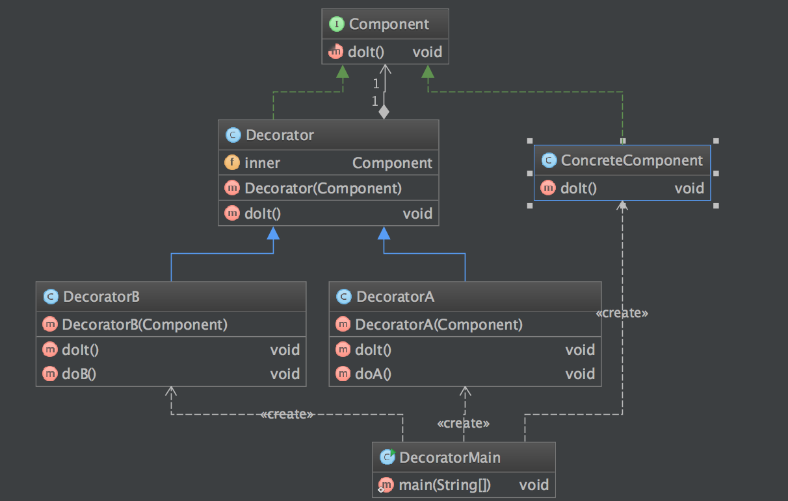

定义
装饰者模式动态地将责任附加到对象上。若要扩展功能，装饰者提供了比继承更具有弹性的替代方案，其别名也可以称为包装器(Wrapper）
使用场景
- 在不影响其他对象的情况下，以动态、透明的方式给单个对象添加职责。
- 需要动态地给一个对象增加功能，这些功能也可以动态地被撤销。
- 当不能采用继承的方式对系统进行扩充或者采用继承不利于系统扩展和维护时。不能采用继承的情况主要有两类：第一类是系统中存在大量独立的扩展，为支持每一种组合将产生大量的子类，使得子类数目呈爆炸性增长；第二类是因为类定义不能继承（如final类）.
UML 图

Component: 抽象构件
ConcreteComponent: 具体构件
Decorator: 抽象装饰类
ConcreteDecorator: 具体装饰类
简单实现
步骤
- 定义装饰的接口
- 实现抽象装饰类
- 实现具体装饰类
- 实现被装饰对象
- 客户端调用
- 实例化被装饰对象
- 用装饰类装饰这个对象
例子
public interface Component {
void doIt();
}
public class Decorator implements Component{
private Component inner;
public Decorator(Component inner) {
this.inner = inner;
}
@Override
public void doIt() {
inner.doIt();
}
}
public class DecoratorA extends Decorator {
public DecoratorA(Component inner) {
super(inner);
}
@Override
public void doIt() {
super.doIt();
doA();
}
private void doA() {
System.out.println("After Doit,DO A!");
}
}
public class DecoratorB extends Decorator {
public DecoratorB(Component inner) {
super(inner);
}
@Override
public void doIt() {
doB();
super.doIt();
}
private void doB() {
System.out.println("Before Do it,DO B!");
}
}
public class ConcreteComponent implements Component {
@Override
public void doIt() {
System.out.println("ConcreteComponent Doit");
}
}
客户端调用
package io.github.xuyushi.decorator;
/**
* Created by xuyushi on 16/2/21.
*/
public class DecoratorMain {
public static void main(String[] args) {
System.out.println("DecoratorMain RUNNING");
// write your code here
System.out.println("------------");
ConcreteComponent concreteComponent = new ConcreteComponent();
DecoratorA decoratorA = new DecoratorA(concreteComponent);
decoratorA.doIt();
System.out.println("------------");
DecoratorB decoratorB = new DecoratorB(concreteComponent);
decoratorB.doIt();
}
}
结果
DecoratorMain RUNNING
------------
ConcreteComponent Doit
After Doit,DO A!
------------
Before Do it,DO B!
ConcreteComponent Doit
Process finished with exit code 0
类图

总结
- 优点
- 装饰模式与继承关系的目的都是要扩展对象的功能，但是装饰模式可以提供比继承更多的灵活性。
- 可以通过一种动态的方式来扩展一个对象的功能，通过配置文件可以在运行时选择不同的装饰器，从而实现不同的行为。
- 通过使用不同的具体装饰类以及这些装饰类的排列组合，可以创造出很多不同行为的组合。可以使用多个具体装饰类来装饰同一对象，得到功能更为强大的对象。
- 具体构件类与具体装饰类可以独立变化，用户可以根据需要增加新的具体构件类和具体装饰类，在使用时再对其进行组合，原有代码无须改变，符合“开闭原则”
- 缺点
- 使用装饰模式进行系统设计时将产生很多小对象，这些对象的区别在于它们之间相互连接的方式有所不同，而不是它们的类或者属性值有所不同，同时还将产生很多具体装饰类。这些装饰类和小对象的产生将增加系统的复杂度，加大学习与理解的难度。
- 这种比继承更加灵活机动的特性，也同时意味着装饰模式比继承更加易于出错，排错也很困难，对于多次装饰的对象，调试时寻找错误可能需要逐级排查，较为烦琐。
参考
http://design-patterns.readthedocs.org/zh_CN/latest/structural_patterns/decorator.html
https://sourcemaking.com/design_patterns/decorator
『head first 设计模式』